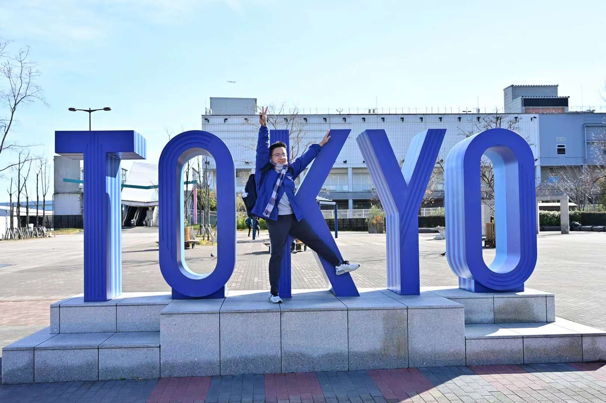
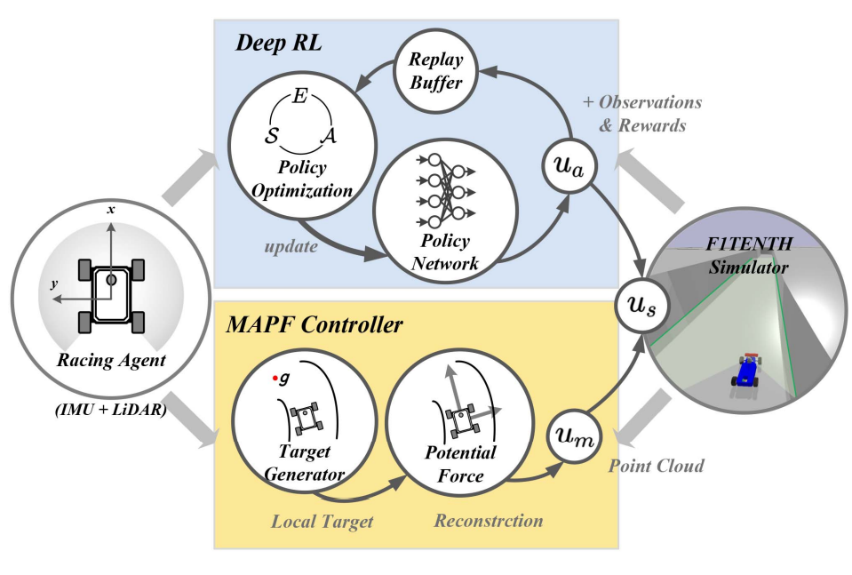
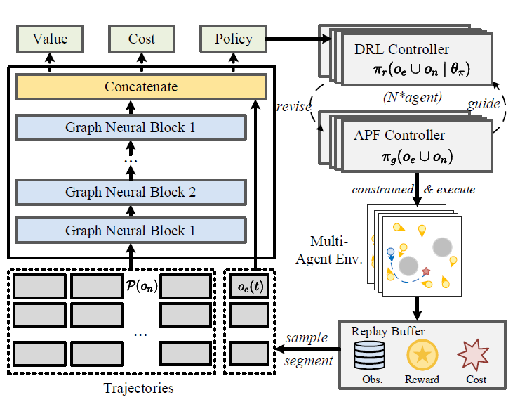
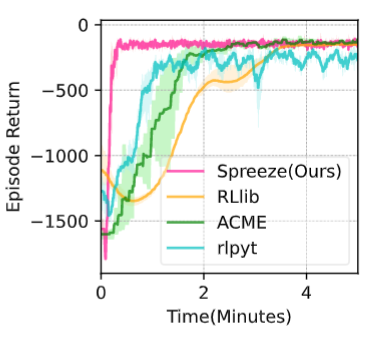

|
Ruiqi(Rich) Zhang
I'm an undergraduate in Automotive Engineering @ Tongji University and a researcher of ISPC Group supervised by Prof. Guang Chen. My research mainly focuses on Robotics, Reinforcement Learning and Computer Vision.
In the 2022 spring, I joined the Robotics Institute of Carnegie Mellon University and cooperated with Prof. Ji Zhang. We developed an autonomous exploration toolkit via NVIDIA IsaacSim. In the 2022 summer, I joined the School of Computing of National University of Singapore and cooperated with Prof. Lin Shao and Xiao Ma. We developed a gradient-based RL algorithm via differentiable simulator.
In 2023 FALL, I will join the HiPeR Lab @ UC Berkeley and begin my happy journal with Prof. Mark W. Mueller :)
Email /
CV /
Google Scholar /
Github
|

|
|
News
- [Sep. 2022] 1 paper for Multi-Agent Navigation has been accepted to IEEE MFI (Best student paper).
- [Aug. 2022] I'm joining National University of Singapore, cooperating with Prof. Lin Shao
- [Jul. 2022] 1 paper for F1Tenth Autonomous Racing has been accepted to IEEE RA-L (My first Paper)!
- [Apr. 2022] I'm joining Carnegie Mellon University Robotics Institute, cooperating with Prof. Ji Zhang
- [Dec. 2021] 1 paper for Relative Pose Estimation has been accepted to Frontiers in NeuroRobotics.
- [Aug. 2020] I'm joining ISPC-Lab as a research scientist working on reinforcement learning.
|
|

|
Residual Policy Learning Facilitates Efficient Model-Free Autonomous Racing
Ruiqi Zhang,
Jing Hou,
Guang Chen*,
Zhijun Li,
Jianxiao Chen,
Alois Knoll
IEEE Robotics and Automation Letters, 2022
pdf
/
bibtex
We develop an efficient residual policy learning algorithm with modified artificial potential field for autonomous racing, which leverages complementary property of MAPF and model-free DRL. Meanwhile, we validate its robustness, generalization ability, real-time performance and lap time on 5 tracks of F1Tenth competition. Experimental results show our method outperforms the state-of-the-art method Dreamer and reaches the comparable level of professional human players.
|
|

|
PIPO: Policy Optimization with Permutation-Invariant Constraint for Distributed Multi-Robot Navigation
Ruiqi Zhang,
Guang Chen*,
Jing Hou,
Zhijun Li,
Alois Knoll
IEEE International Conference on Multisensor Fusion and Integration, 2022 (best student paper)
pdf
/
bibtex
We propose a decentralized reinforcement learning method via graph convolutional network. Our method utilizes the permutation-invariant property in multi-agent system to enhance the representation and generalization ability of actor-critic network. Experimental results show our method is much safer than centralized MARL baselines and constrained barrier function-based methods and can be generalized to arbitrary number of agents.
|
|

|
Spreeze: High-Throughput Parallel Reinforcement Learning Framework
Jing Hou,
Guang Chen*,
Ruiqi Zhang,
Zhijun Li,
Shangding Gu,
Changjun Jiang
IEEE Transactions on Parallel and Distributed Systems (under review), 2022
pdf
/
bibtex
We propose a high-performance RL frameworks called Spreeze, which asynchronously parallelizes the experience sampling, network update, performance evaluation, and visualization
operations, and employs multiple efficient data transmission techniques to transfer various types of data between processes. The
framework can automatically adjust the parallelization hyperparameters based on the computing ability of the hardware device in order
to perform efficient large-batch updates.
|
|
Survice
- Conference Reviewer: ICRA 2023
- Journal Reviewer: IEEE T-ASE, Frontiers in NeuroRobotics
|
|
{kind=link}
{kind=link}